merged_df <- read_csv(here("Data/merged_output_deployment_filtered.csv"))
# remove the anthropogenic sources
anthro <- c("Fireworks_Fireworks", "Siren_Siren", "Engine_Engine", "Gun_Gun",
"Human vocal_Human vocal", "Human non-vocal_Human non-vocal", "Dog_Dog")
merged_df <- merged_df |> filter(!(species %in% anthro))Analyzing Audio Patterns During the 2024 Total Solar Eclipse
1 Introduction
Solar eclipses are a rare natural experiment to study changes in animal activity patterns and behaviors. Light dictates many animals’ circadian rhythm and activity pattern; changes in light levels act as a trigger for behaviors such as vocalizing, resting, or foraging. While athroprogenic light pollution at night has been studied and there is research in controlled settings little experimentation has been done on lack of light in natural settings. A study of the 2024 solar eclipse documented a change in vocalization patterns in praire birds and saw a change in some overall acoustic indecies (Von Deylen 2025). Birds were seen to vocalize differently on the eclipse day to surrounding days and exhibit similar behaviors to dusk and post-dusk (but not dawn) (Von Deylen 2025). However, there has been limited investigation into the species-specific responses to the eclipse and how that contributes to the change in the overall soundscape. In this study we investigate species-specific changes in vocalization activity through the use of passive acoustic monitoring, AI species identification, and bioacoustic modeling.
Passive acoustic monitoring is an effective method for investigating presesnce and activity changes through recordings of vocalizations, which has been shown to be comparable to traditional methods like point-counts (Darras et al. 2018). Passive acoustic monitoring is a non-invasive field method in which researchers can identify (auditory) species without disturbing the environment. While an advantage of using recorders is reduced time spent in the field, they have some inherent challenges: (1) the time spent by experts listening the audio recordings and (2) the large volume of data (audio files) produced by autonomous recording. The development of deep learning algorithms that identify species from the audio files, addresses one of the challenges of bioacoustic analysis and makes passive acoustice monitoring a more feasible data collection method. One species identification algorithm is BirdNET, developed by Cornell Lab of Ornithology (Kahl et al., 2021), which breaks audio files into three-second clips to identify a species and provides a ‘probability’ of its confidence in the prediction. While the use of algorthims like BirdNET drastically reduces the time spent by experts listening to audio, it still does not address the challenge of dealing with the large volume of data, along with introducing new challenges like computing power and how to interpret these confidence scores to extract meaningful insight. Our work attempts to address some of the inherent challenges in using BirdNET for bioacoustic analysis and effectively model the data to address a real-world question: what were the species-level response to the 2024 total eclipse? We develop workflow for running BirdNET on a high-performace computing (HPC) cluster and manipulating the output for modeling.
The study area included natural areas around Canton, NY: St. Lawrence University Kip Trail in Canton, Donnerville State Forest in Russell, and Upper and Lower Lake Wildlife Management Area in Rensselaer Falls (Fig 1A). Divided among these sites, we selected 20 acoustic recorder deployment locations (Fig 1B). The recording spanned from March 30, 2024 to April 16, 2024 – several days on either side of the eclipse, which occurred on April 8th, 2024. On eclipse day, the partial eclipse began at 14:11:38, totality began at 15:23:52, maximum eclipse was at 15:25:29, totality ended at 15:27:05 and the partial eclipse ended at 16:35:38 (all times local, times from https://www.timeanddate.com/eclipse/in/@5111484?iso=20240408). All deployments were within the path of the eclipse and were in a forest-wetland interface or forested wetlands to capture both bird and breeding amphibian audio (along with any distinguishable mammals and insects).

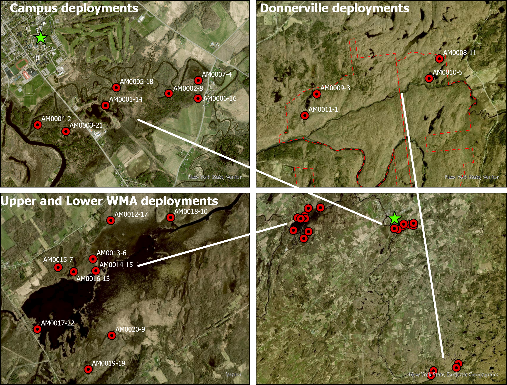
- Map of AudioMoth deployments around Canton, NY. Subpanel depicts the eclipse path through norther NY. (B) One panel containing the entire deployment map with zoomed in view of each deployment location: St. Lawrence University (Canton, NY), Donnerville State Forest (Russell, NY), and Upper and Lower Lake WMA (Renselear Falls, NY).
We used AudioMoth recorders (Open Acoustic Devices), which are inexpensive, open source, and configurable. The recording occurred in four sections of the day: the first section was from 05:45 – 07:15 (approximately 30 minutes before to 45 minutes after sunrise), the second from 14:00 to 16:50 (capturing the full period of time each day corresponding to the eclipse on April 8), the third from 19:00 to 20:00 (approximately 30 minutes before and after sunset) and the last from 23:00 to 23:30 (to sample nocturnal sounds). Within each recording window, the AudioMoths actively recorded for 55 seconds and ‘rested’ (did no record) for 5 seconds and saved this 1 minute cycle as an individual audio file on the SD card.
After data collection, we transfered the audio files onto a HPC. We used a Python script and run-file to run BirdNET-Analyzer on the HPC to identify species within each AudioMoth’s folder of audiofiles. For each AudioMoth folder, BirdNET divides each of the one minute soundfiles into three second clips and identifies a species or leaves an “NA.” Each row in the output contains the audio file, the start and end time of the three second clip, a probability of how ‘confident’ the model is in its species prediction (if there was an identification) under the column for that species, and then ‘NAs’ under the other columns containing the species that were found in the entire AudioMoth folder of audiofiles. Once we analyzed every AudioMoth folder, we compiled the output files into a single data set (while adding some more date/time variables) and merged the data set with the deployment data in R (version 4.4.3). BirdNET takes a ‘species list’ that filters the output to be species of one’s choosing. However, this does not change the analysis, it only removes identification if the species is not in the species list. Without a species list, BirdNET does identify a lot of species that are not present in the study area. We created a species list using yearly frequencies on Ebird for the bird species. For the anurans, we looked at the raw output and kept the species we knew to be present.
2 Data Exploration
# data for text:
basic_stats <- merged_df |> summarise(duration = max(date(date_time)) - min(date(date_time)),
count = n(),
sr = n_distinct(species))
# data for text and figures below:
common_species <- merged_df |> group_by(species) |>
summarise(count = n()) |>
ungroup() |>
arrange(desc(count)) |>
slice(1:10) |>
mutate(species = fct_reorder(species, count))
site_stats <- merged_df |> group_by(deployment_num) |>
summarise(count = n(),
species_richness = n_distinct(species)) |>
ungroup() |>
arrange(desc(count)) |>
slice(1:10)Using R, we started exploring the data. We recorded for 17 resulting in 339859 total detections and 86 total species. The most common were Spring Peepers (Pseudacris crucifer) with 190679 total detections. A site in Donnerville State Forest had the most detections with 41192, but the site with the highest species richness was on St. Lawrence University campus with 26 species identified.
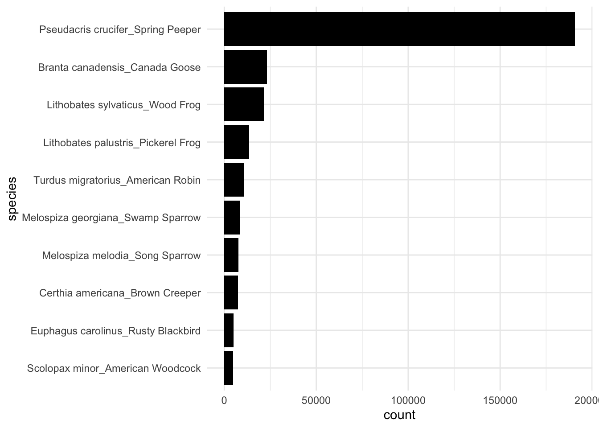
| deployment_num | count | species_richness |
|---|---|---|
| AM0009 | 41192 | 8 |
| AM0007 | 34113 | 21 |
| AM0011 | 31651 | 7 |
| AM0001 | 30779 | 9 |
| AM0006 | 27854 | 22 |
| AM0018 | 23808 | 26 |
| AM0003 | 20493 | 17 |
| AM0014 | 20240 | 25 |
| AM0002 | 18238 | 18 |
| AM0015 | 11989 | 19 |
To frame our analysis, we started investigating which temporal scale is useful in comparing the eclipse to the surrounding days. We manipulated the data to look at intervals around the time of totality (15:25:30) for each day sampled to see what resolution best represented the differences in species identifications during the eclipse. The visualization below shows more new hits on the eclipse day compared to other days during intervals extending to around 30 mins on either side of the time of totality. At intervals of more than ± 30 mins, the number of identifications looks similar to the other days.
days <- c(1:15)
## units are all in seconds since midnight
## create a vector of seconds that I want to add and subtract to and from
## the time of totality
interval_range <- (c(seq(30, 3030, by = 60)))
mid_point <- as_hms("15:25:30") |> as.numeric() ## time of totality
## convert time to seconds since midnight
merged_df <- merged_df |> mutate(time_basic = as_hms(time) |> as.numeric()) |>
relocate(time_basic)
## only look at April 1 through 15
focused_time <- merged_df |> filter(day(date_time) %in% days)## filter hits (of any species) based on a provided "interval" value
## interval could be named better: it is really just the number of seconds
## we are adding and subtracting from the time of totality
## to create an interval
filter_interval <- function(mid_point, df, interval, min_prob) {
df |> filter(time_basic >= mid_point - interval & time_basic <= mid_point + interval) |>
mutate(interval_size = interval * 2) |>
filter(probability >= min_prob)
}
## map through the function to get one data set filtered by each of the values in
## the interval_range variable
## goal: see how the number of hits changes as we get a wider and wider interval around the eclipse
## map through the function for the different interval sizes
dfs <- map_dfr(interval_range, filter_interval,
mid_point = as_hms("15:25:30") |> as.numeric(),
df = focused_time, min_prob = 0.75) |>
mutate(day = day(date_time),
month = month(date_time),
eclipse_ind = if_else(day == "8" & month == "4",
true = "eclipse",
false = "non-eclipse"))
## grab total number of detections (of any species) for each interval for
## each day for each month (only looking at April here, but wanted
## this to generalize to March if we included it).
df_count <- dfs |> group_by(day, month, interval_size) |>
summarise(n_hits = n(),
eclipse_ind = first(eclipse_ind))
## n_hits is cumulative for larger and larger interval sizes
## new_hits is the number of unique hits for each increasing interval
## e.g., if there were 50 hits in the minute surrounding the eclipse and
## 150 hits in the two minutes surrounding the eclipse, then
## n_hits would be (50, 200) and new_hits would be (50, 150)
df_count <- df_count |> group_by(day, month) |>
mutate(n_hits_lag = lag(n_hits),
n_hits_lag = if_else(is.na(n_hits_lag), true = 0, false = n_hits_lag)) |>
mutate(new_hits = n_hits - n_hits_lag)
## this second one is just the raw number of new hits as the interval size
## surrounding the eclipse slowly increases by 1 minute on each side,
## centered at totality
## this suggests that there is an increase in overall call rate
## during the eclipse but that we are looking too far out
## the increasing amount of calls peters off as we get further from
## totality and is no different than other days past
## an interval size of about 2000 seconds (which roughly
## corresponds to adding and subtracting 30 minutes from the time of totality)
ggplot(data = df_count, aes(x = interval_size, y = new_hits)) +
geom_line(aes(group = day, colour = eclipse_ind), alpha = 0.5) +
scale_colour_viridis_d() +
labs(x = "Interval Around Totality (seconds)",
y = "New Species Detections",
colour = "Day")+
theme_minimal()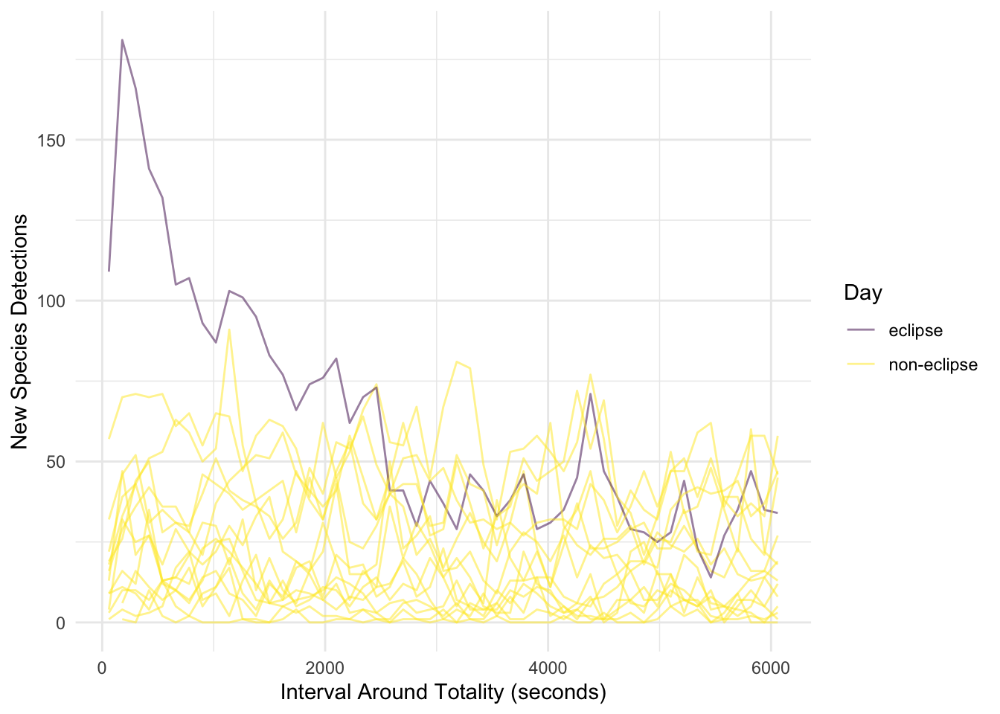
After finding our interval of interest, we investigated the vocalization pattern from all species on eclipse day compared to other days. The figure below depects the presence of any species from all sites (1 for a species identification and 0 for no species identified) during a span of 5 days including the date of the eclipse. During the day of the eclipse (April 8th), there is a clear peak in activity centered right at the time of totality, which is not present in other days.
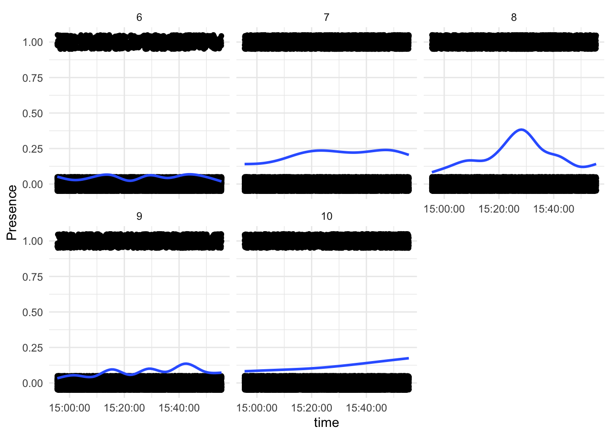
Then, we looked at the most common species for this 5 day span during the time span of ±30 from the time of the eclipse.
| species | count |
|---|---|
| Pseudacris crucifer_Spring Peeper | 7931 |
| Lithobates sylvaticus_Wood Frog | 2574 |
| Branta canadensis_Canada Goose | 764 |
| Lithobates palustris_Pickerel Frog | 709 |
| Poecile atricapillus_Black-capped Chickadee | 582 |
| Quiscalus quiscula_Common Grackle | 476 |
| Certhia americana_Brown Creeper | 317 |
| Corvus brachyrhynchos_American Crow | 295 |
| Meleagris gallopavo_Wild Turkey | 286 |
| Sayornis phoebe_Eastern Phoebe | 226 |
Next, we investigated the vocalization activity for the most common species at the time of the eclipse across the five days. First with Spring Peepers, the most common species in the entire data set, we see similar peak in activity around the time of totality. What is notable about April 6th was the low temperature, which could have influence their activity.
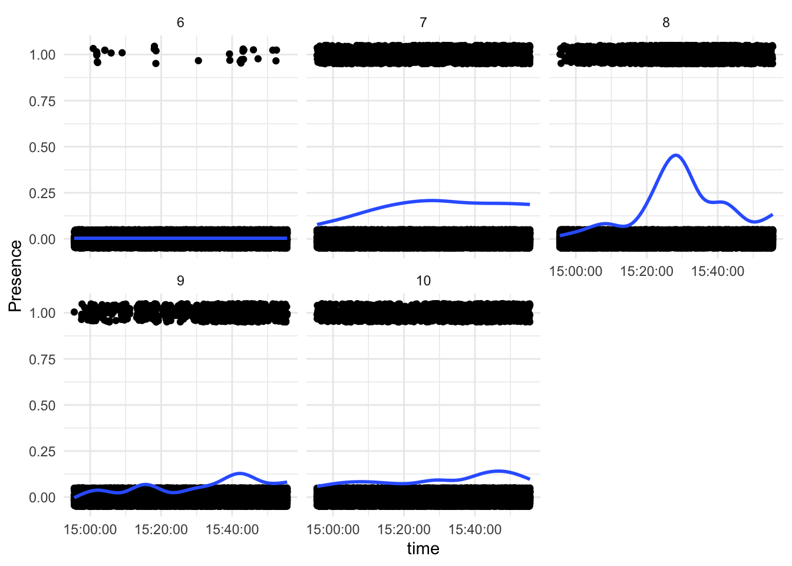
The wood frog was next most common for this time scale, and it a more random pattern across the five days. It was not recorded at all on April 6th (we again hypothesize the weather being an influence), and the eclipse day does not seem to have a distinct pattern.
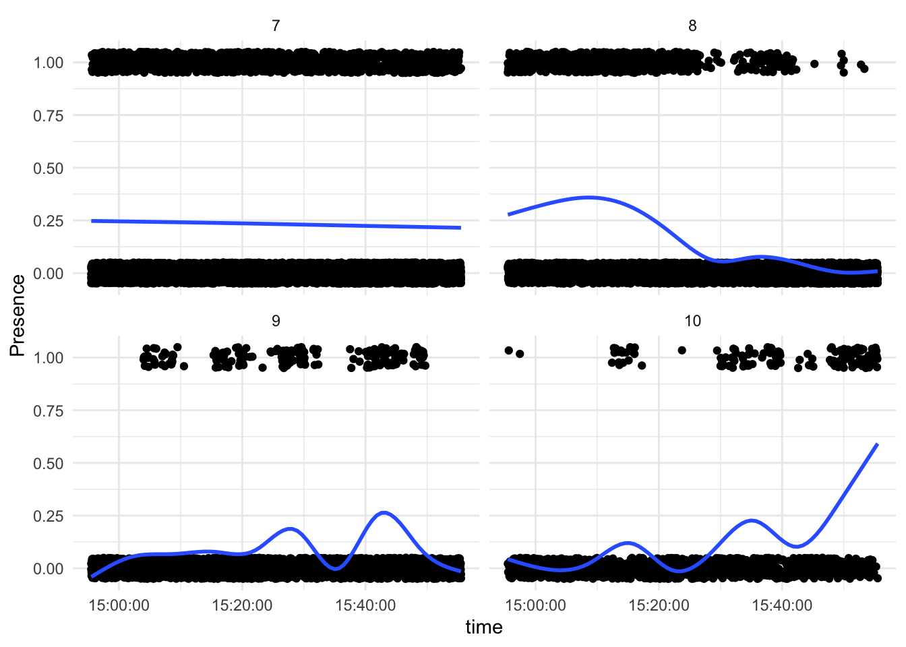
The Canada goose was the most common bird species across the 5 days for this time scale. It’s overall pattern across the 5 days does not seem different, but there’s a notable gap in presence directly at the time of totality.
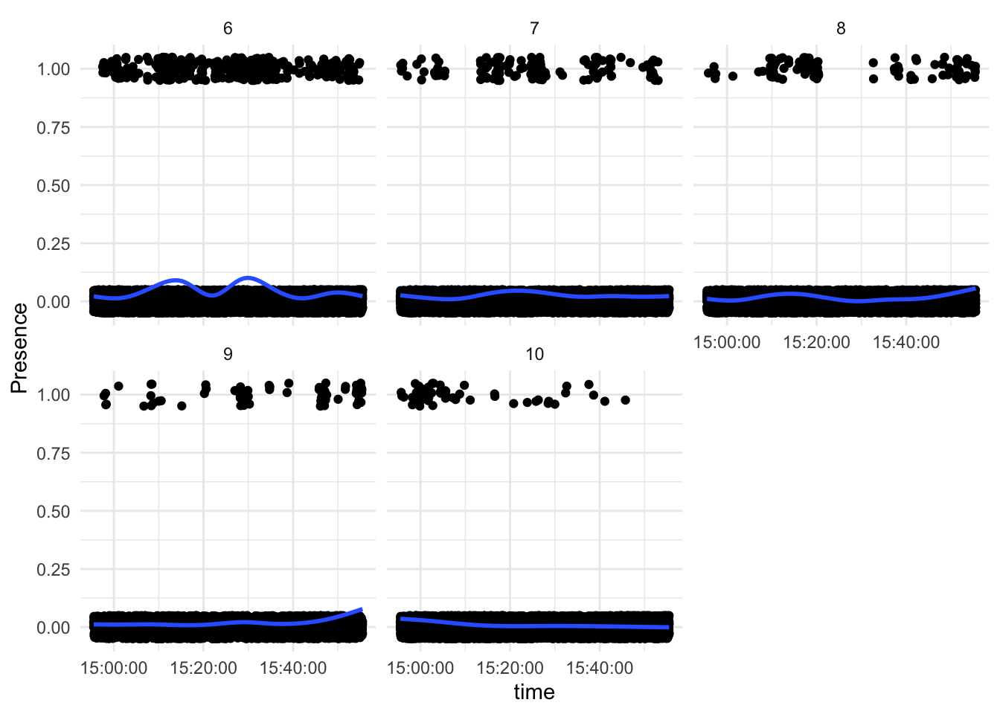
The last frog in the top ten, the pickerel frog, had a similar pattern to the Spring Peeper, but a lot less dramatic. Like the wood frog, it was also not detected on the 6th. However, there is a slight increase in detections around the time of totality, but it is very minimal.
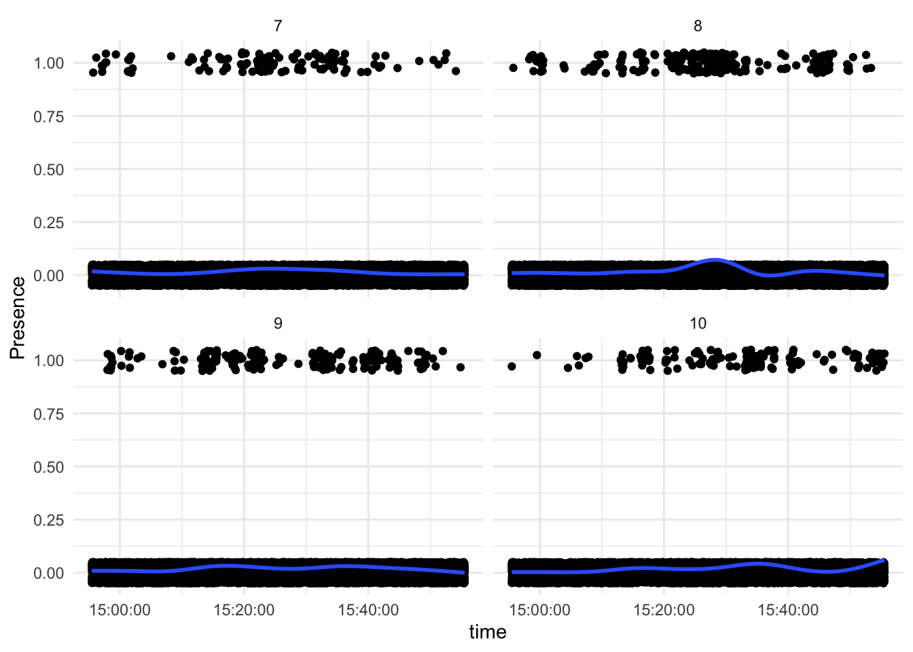
The next bird we looked at was the Black-capped Chickadee. There is much of a discernible visual pattern, especially due to the lack of detections on the 7th and 8th.
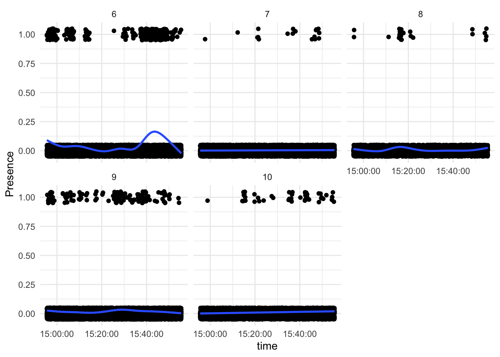
The Common Grackle seemed to have a more dramatic response to the eclipse. Even more clearly than the Canadian Goose, there is a gap in detection around the time of totality, but lots of detections leading up to totality (during the partial eclipse). Partially what makes this pattern so distinct is the high number of calls on the 7th that did not match the pattern seen on the eclipse. However, there were a lot more calls on the 7th and 8th than the other surrounding days, which makes the comparison less robust.
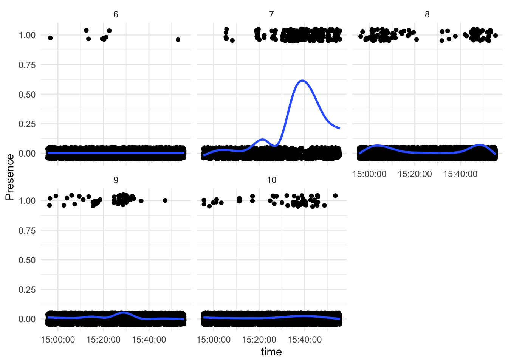
After looking at vizuals of species specific-responses and the entire data set of detections there seems to be a difference in responses between some of the frogs and birds. There also seems to be three categories of responses in general: no response to the eclipse, increased calls around totality, and a gap in calls at totality (but perhaps increased calls during totality). These differences in responses may reflect differences in light-triggered behaviors, which prompted us to do more formal analysis and modeling.
3 Community Model
com_mod <- readRDS(here("Scripts/AM_6_3d_mod.rds"))To model all the species identified at __ sites and over ___ days (centered on the day of eclipse), we used a generalized additive mixed model. The mixed model component incorporates a autoregressive term to address autocorrelation in the data. We used species detection – whether BirdNET identified a species or not – as our binary response variable. We wanted to see the overall community reaction to the eclipse in this model, so all species were included in the analysis. Any 3-second time span where BirdNET predicted a species, we coded a 1 and any other 3-second soundbyte was coded as a 0.
\[ \operatorname{logit}(\pi_{iad}) = \beta_{ad} + f_{ad}(t_{iad}) + \epsilon_{iad} \]
Since the response variable is binary, our ‘family’ for the model was binomial and we used a log-link function. \(\pi_{id}\) represents the probability of detecting a species for the \(i^{th}\) observation recorded on the \(a^{th}\) audiomoth($a = 1, 2, , _ $) on the \(d^{th}\) day of recording ($d = _ $). \(\beta_{ad}\) is the intercept for each audiomoth-day combination. \(f_{ad}(t_{iad})\) is a smoother term for time (indexed by \(i\)) that changes for each audiomoth-day combination. \(t_{iad}\) represents the time (in seconds) that the \(i^{th}\) observation was recorded at the \(a^{th}\) audiomoth and the \(d^{th}\) day. \(\epsilon_{iad}\) represents random errors that follow an AR(1) temporal correlation structure for each AudioMoth-day combination with common shared correlation parameter \(p\).
We saw that the smoothers were generally significant, meaning they effectively caputured the pattern of species vocalization activity at each site (AudioMoth) and day combination.
| term | edf | ref.df | statistic | p.value |
|---|---|---|---|---|
| s(time_num):audiomoth_dayAM0001.7 | 6.868 | 6.868 | 12.91 | 0 |
| s(time_num):audiomoth_dayAM0002.7 | 6.71 | 6.71 | 4.903 | 2.806e-05 |
| s(time_num):audiomoth_dayAM0009.7 | 7.18 | 7.18 | 127.2 | 0 |
| s(time_num):audiomoth_dayAM0011.7 | 1.791 | 1.791 | 1.022 | 0.2888 |
| s(time_num):audiomoth_dayAM0017.7 | 1 | 1 | 57.74 | 0 |
| s(time_num):audiomoth_dayAM0020.7 | 1 | 1 | 2.767 | 0.09622 |
| s(time_num):audiomoth_dayAM0001.8 | 8.604 | 8.604 | 87.65 | 0 |
| s(time_num):audiomoth_dayAM0002.8 | 7.363 | 7.363 | 54 | 0 |
| s(time_num):audiomoth_dayAM0009.8 | 5.23 | 5.23 | 17.24 | 0 |
| s(time_num):audiomoth_dayAM0011.8 | 7.84 | 7.84 | 39.83 | 0 |
| s(time_num):audiomoth_dayAM0017.8 | 6.617 | 6.617 | 23.93 | 0 |
| s(time_num):audiomoth_dayAM0020.8 | 3.195 | 3.195 | 4.144 | 0.004662 |
| s(time_num):audiomoth_dayAM0001.9 | 1 | 1 | 34.45 | 0 |
| s(time_num):audiomoth_dayAM0002.9 | 1 | 1 | 0.3167 | 0.5736 |
| s(time_num):audiomoth_dayAM0009.9 | 1 | 1 | 194.9 | 0 |
| s(time_num):audiomoth_dayAM0011.9 | 8.448 | 8.448 | 15 | 0 |
| s(time_num):audiomoth_dayAM0017.9 | 3.16 | 3.16 | 11.29 | 1.738e-07 |
| s(time_num):audiomoth_dayAM0020.9 | 1 | 1 | 0.9676 | 0.3253 |
As seen with the smoothers and in the plot below, the day and the site seems to result in a different pattern. We do still see the increase in overall vocalizations on April 8th, but the patterns become more varied from a peak at totality due to the site.
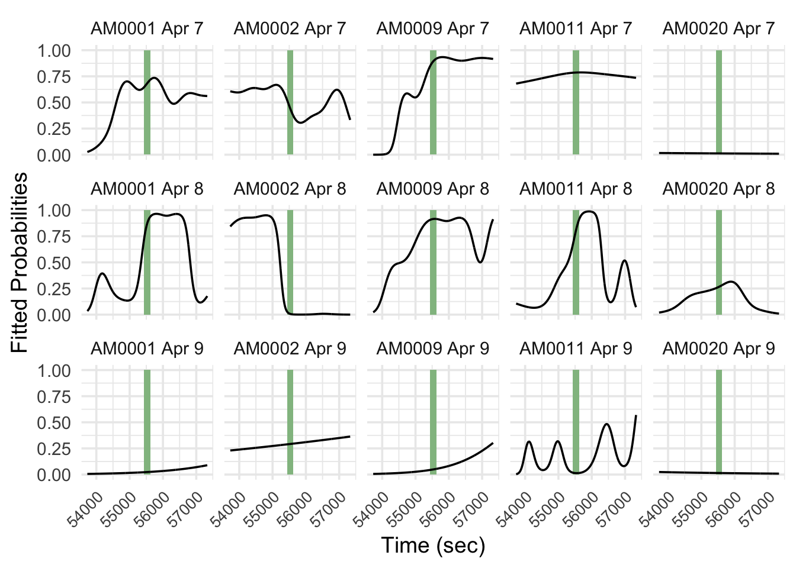
4 Conclusion
Altogether, the 2024 eclipse seemed to increase wildlife vocalizations, but each individual species seem to respond in different ways. Spring Peppers, see to drive the general, community-level pattern, with a peak in vocalizations at totality, some other Anurans seem to share this response. The birds responded more idosyncatrically, but some like the Common Grackle, Rusty Blackbird, and Candian Goose, had a gap in calls during totality with an heightened level of vocal activity around totality. These differences in species-level responses may cause the difference in vocalization pattern due to sight in the GAMM model, as intersite differences species composition could result in the different patterns seen on eclipse day. Models investingating specific species or groups of related species may illucidate how their responsed drive the overall community pattern across sites and the days studied.
Another key future step is to validate these data. The BirdNET output includes a confidence score for each species prediction. We did not discriminate based on this score as long as the confidence was greater than 0.4. However, manual validation is required to know how to threshold the data (to minimize misidentiifications), as well as determine if each species requires a different threshold based on detection difficulty (more cryptic species or more difficult for BirdNET to identify). Without validation by experts, it remains unclear how accurate BirdNET was in its predictions, and which data are representitive of the actual vocalizations made by the wildlife community we recorded.
The effectiveness of the GAMM model and our exploratory analysis illustrate an increase in vocalization and differential species responses to the 2024 total eclipse. With further investigation into species-level responses and validation of the data, we can get an even clearer understanding of how forest communities react to unexpected and dramatic changes in light.